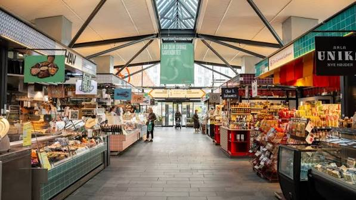
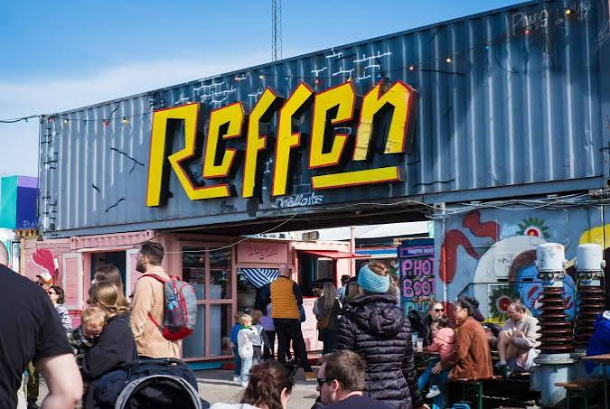

CityLoop Quest Copenhague


Le matin copenhaguois commence souvent dans une boulangerie. On y achète un rundstykke, un morceau de pain au levain ou une viennoiserie, puis un café que l’on boit parfois en marchant. Les nouvelles boulangeries artisanales ont élevé les prix et la précision technique, mais les établissements de quartier restent des lieux de routine où l’on connaît les commandes des habitués.
Torvehallerne, près de Nørreport, réunit deux halles de verre ouvertes en 2011. Poissonniers, fromagers, étals de légumes, comptoirs de smørrebrød et cuisines du monde y cohabitent. Le lieu n’est pas un marché populaire bon marché, mais il offre un panorama pratique des produits et permet de composer un repas en petites portions.

Les anciennes halles de Kødbyen à Vesterbro accueillent restaurants, bars et événements dans un décor de bâtiments blancs ou bruns hérités des abattoirs. À Refshaleøen, Reffen rassemble des cuisines de rue dans des conteneurs et ateliers recyclés. Ces espaces montrent comment les friches industrielles sont devenues des destinations culinaires, avec le risque de perdre une partie de leur histoire ouvrière.

Le déjeuner reste souvent plus simple que le dîner. Les Danois apprécient la pause café accompagnée d’un gâteau, sans ritualiser chaque rencontre. Le vendredi, bars et bureaux peuvent commencer tôt le week-end. La bière artisanale a explosé depuis les années 2000, mais les marques historiques et le schnaps gardent leur place dans les repas traditionnels.
Réserver est prudent dans les restaurants recherchés, tandis que les comptoirs de marché fonctionnent plus spontanément. L’eau du robinet est potable et généralement servie sans difficulté, parfois facturée dans certains établissements. Le service est inclus ; un pourboire modeste reste facultatif. Pour manger comme un habitant, choisissez une adresse à quelques rues des grands quais et observez ce que commandent les tables voisines.